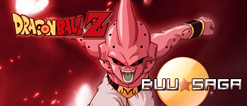

1: Talk with Kaioshin on Budokai, next Go to Babidi's Ship and Kill Majin Monsters and Talk with Kaioshin.
Porozmawiaj z Shinem na Turnieju, nastepnie udaj sie do statku Babidi'ego, pokonaj potwory i porozmawiaj z Kaioshinem.
2: Fight with Fat Buu.
Pokonaj Fat Buu.
3: Go to Dende Place and talk with Piccolo.
Udaj sie do palacu Dende i porozmawiaj z Piccolo.
4: Fight with Evil Buu.
Pokonaj Eviul Buu w sali treningowej.
5: Talk with Old Kaio in Heaven.
Porozmawiaj z Starym Bogiem w Niebie.
6: Fight with Buu on Desert.
Pokonaj Buu na pustyni.
7: Talk with Super Buu, Find Exit.
Porozmawiaj z Super Buu i znajdz wyjscie z jego ciala.
8: Talk with Goku in Small City.
Porozmawiaj z Goku w small city.